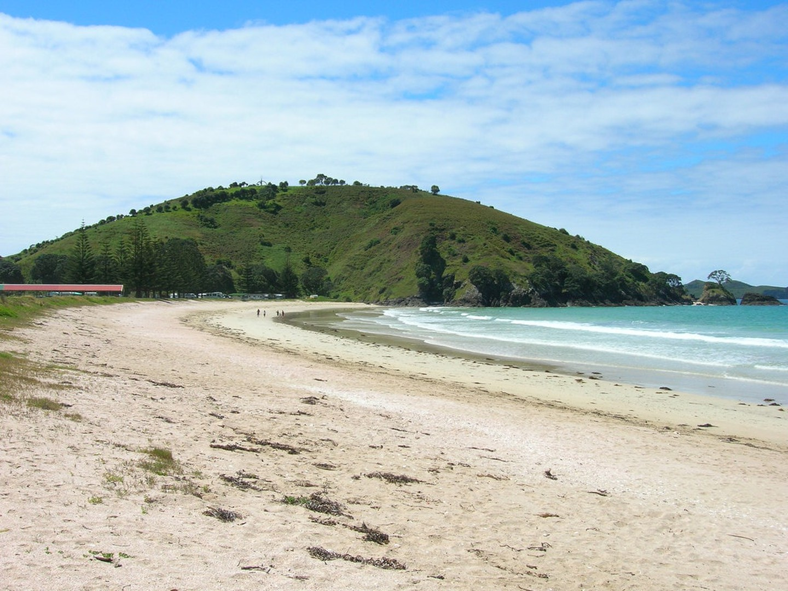
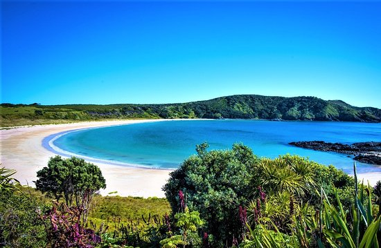
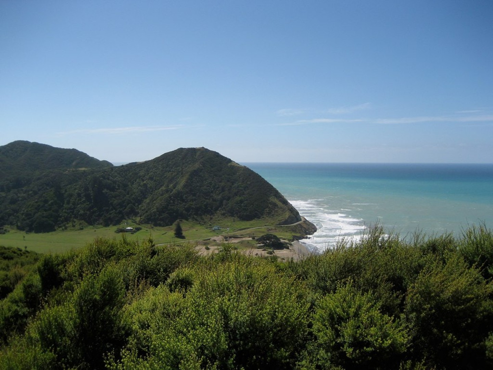

Urupukapuka Bay Campsite
Bay of Islands
A beautiful beachfront campground that is located on the North Island offering walking, fishing and multiple water activities.
Urupukapuka Island 
Maitai Bay
Karikari Peninsula, North Island
Very popular camping spot among people, but still very peaceful. This is one of the top places for snorkelling if you would like to get up and close with marine wildlife.

Opoutere Coastal Camping
Coromandel
Offering everything a camper could want, white sandy beaches, lush pohutukawa trees and tranquility. But make sure to book quickly because this is a highly recommended experince in the region.

Totaranui Campgroundh4>
Abel Tasman National Park
One of the largest campgrounds of 31.7 miles that can fit up to 850 campers offering beaches, beautiful ocean views and green plans with a splash of mountians.